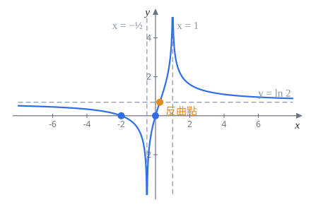

109 學年第 1 學期 微積分 1 期中考
模組 13–17 班，官方解答改寫成詳解
官方解答錯誤兩處：
- 第 4(a) 題：最後寫 $y'=2$，應為 $y'=-2$（由 $y'+8+3y'=0$ 解出）。後面 (b)(c) 用的都是 $-2$，只是筆誤。
- 第 7(c) 題：凹向區間沒有扣掉定義域外的點。官方寫凹口向上 $(\frac14,\infty)$、向下 $(-\infty,\frac14)$，但 $x=1$、$x=-\frac12$ 不在定義域。應為凹口向上 $(\frac14,1)$、$(1,\infty)$；凹口向下 $(-\infty,-\frac12)$、$(-\frac12,\frac14)$。
每題下方灰字是對應的主題複習路線段號和講義小節。標超出範圍的是講義沒教的工具，看懂就好。這份考卷第 5 題指定用羅必達，講義規定考試不能用，整題列為超出範圍，但 (a)(b) 另外附上講義範圍內的做法。
第 1 題 求極限（15%）
1(a)$\displaystyle\lim_{x\to-\infty}\frac{2e^x+5}{3-e^x}$（5%）
考點：$x\to-\infty$ 時 $e^x\to0$。分子分母的極限都存在、分母不為 $0$，直接代。
$$\lim_{x\to-\infty}\frac{2e^x+5}{3-e^x}=\frac{2\cdot0+5}{3-0}$$$\dfrac53$
官方給分：答案 3 分、寫出 $e^x\to0$ 2 分。用羅必達扣 5 分（這題也不是不定型，根本不能用）。
1(b)$\displaystyle\lim_{x\to0^+}\tan^{-1}(1+\ln x)$（5%）
主題 2 反三角函數｜§1.5 主題 5｜§2.2 §2.5
考點：由內往外。$\ln x\to-\infty$，所以 $1+\ln x\to-\infty$；再用 $\tan^{-1}$ 的水平漸近線 $y=-\frac\pi2$。
令 $y=1+\ln x$，$x\to0^+$ 時 $y\to-\infty$：
$$\lim_{x\to0^+}\tan^{-1}(1+\ln x)=\lim_{y\to-\infty}\tan^{-1}y=-\frac\pi2$$$-\dfrac\pi2$
官方給分：答案 3 分、寫出 $\ln x\to-\infty$ 2 分。只畫出 $\tan^{-1}x$ 的圖和水平漸近線但沒做完，給 1 分。
1(c)$\displaystyle\lim_{x\to\infty}\left(\frac1e+\frac ex\right)^x$（5%）
主題 11 $e$ 的極限（辨認型式）｜§5.4 主題 4 夾擠｜§2.4
考點：長得像 $\left(1+\frac ax\right)^x$，但底趨近 $\frac1e$ 不是 $1$。這不是 $1^\infty$ 不定型：小於 $1$ 的數一直自乘只會趨近 $0$。
底數 $\frac1e+\frac ex\to\frac1e\approx0.37$。$x\gt22$ 時 $\frac ex\lt\frac{e}{22}\lt0.13$，所以底數介於 $0$ 和 $\frac12$ 之間：
$$0\lt\left(\frac1e+\frac ex\right)^x\lt\left(\frac12\right)^x\;\longrightarrow\;0$$夾擠得極限為 $0$。
$0$
常見失分：先把底數取極限得 $\frac1e$，再算 $\left(\frac1e\right)^x\to0$。官方說這種「取兩次極限」又沒說明理由的寫法 0 分。要嘛像上面用夾擠，要嘛取 $\ln$：$x\ln\left(\frac1e+\frac ex\right)$ 中 $\ln(\cdots)\to\ln\frac1e=-1$，乘上 $x\to\infty$ 得 $-\infty$，所以原式 $=e^{-\infty}=0$。官方也接受寫成 $\left(\frac1e\right)^\infty$ 並說明 $a\lt1$ 時 $a^\infty$ 不是不定型。
第 2 題 分段函數的連續與可微（15%）
$f(x)=\begin{cases}x^{x+1}, & x\gt0\\ 0, & x=0\\ \dfrac{2(1-\cos x)}{x}, & x\lt0\end{cases}$
2(a)求 $\displaystyle\lim_{x\to0}f(x)$。$f$ 在 $x=0$ 連續嗎？（5%）
考點：分段點要算左右極限。右邊的 $x^{x+1}$ 底 $\to0$、指數 $\to1$，不是不定型；左邊湊 $\frac{\sin x}{x}$。
右極限：$x^{x+1}=e^{(x+1)\ln x}$，$(x+1)\ln x\to1\cdot(-\infty)=-\infty$，所以 $x^{x+1}\to0$。
左極限：分子分母同乘 $1+\cos x$，用 $1-\cos^2x=\sin^2x$：
$$\frac{2(1-\cos x)}{x}=\frac{2\sin^2x}{x(1+\cos x)}=\frac{\sin x}{x}\cdot\sin x\cdot\frac{2}{1+\cos x}\;\longrightarrow\;1\cdot0\cdot1=0$$左右極限都是 $0$，所以 $\lim_{x\to0}f(x)=0=f(0)$。
$\displaystyle\lim_{x\to0}f(x)=0$，$f$ 在 $0$ 連續
官方給分：左右極限各 2 分，結論 1 分。官方左極限的另解用了羅必達，考試不能用。
2(b)求 $\displaystyle\lim_{x\to0}\frac{f(x)-f(0)}{x-0}$。$f$ 在 $x=0$ 可微嗎？（5%）
主題 7 導數的定義｜§4.1 右側需要 $x\ln x\to0$超出範圍（講義在 §6.4 題 25 用羅必達算過）
考點：分段點的可微性用定義算左右導數。左邊是講義的標準極限，右邊會變成 $x^x$。
右導數：
$$\lim_{x\to0^+}\frac{x^{x+1}-0}{x}=\lim_{x\to0^+}x^x=\lim_{x\to0^+}e^{x\ln x}$$這裡要用 $\displaystyle\lim_{x\to0^+}x\ln x=0$。它是 $0\cdot(-\infty)$ 型，講義只在週六題 25 用羅必達示範過，考試時直接引用即可。於是右導數 $=e^0=1$。
左導數：同 (a) 的變形，
$$\lim_{x\to0^-}\frac{2(1-\cos x)}{x^2}=\lim_{x\to0^-}\left(\frac{\sin x}{x}\right)^2\frac{2}{1+\cos x}=1\cdot1=1$$（也就是講義週二題 17 的 $\frac{1-\cos x}{x^2}\to\frac12$ 乘 $2$。）左右導數相等。
極限為 $1$，$f$ 在 $0$ 可微，$f'(0)=1$
2(c)求 $x\neq0$ 時的 $f'(x)$。（5%）
主題 11 對數微分｜§5.4.1 主題 8 商法則｜§4.5
考點：$x\gt0$ 那段底和指數都有 $x$，用對數微分；$x\lt0$ 那段用商法則。
$x\gt0$：$\ln f=(x+1)\ln x$，兩邊微分（1 分）：
$$\frac{f'}{f}=\ln x+\frac{x+1}{x}=\ln x+1+\frac1x\;\Longrightarrow\;f'(x)=x^{x+1}\left(\ln x+1+\frac1x\right)$$$x\lt0$：
$$f'(x)=\frac{2\sin x\cdot x-2(1-\cos x)\cdot1}{x^2}=\frac{2(x\sin x+\cos x-1)}{x^2}$$$f'(x)=\begin{cases}x^{x+1}\left(\ln x+1+\frac1x\right), & x\gt0\\[1mm] \dfrac{2(x\sin x+\cos x-1)}{x^2}, & x\lt0\end{cases}$
第 3 題 求導數（15%）
3(a)$f(x)=e^{\tan x}$，求 $f'(x)$ 與 $f''(x)$。（5%）
考點：連鎖律求 $f'$；$f''$ 是乘積 $e^{\tan x}\cdot\sec^2x$ 的導數，每個因子都要再用一次連鎖律。
$$f'(x)=e^{\tan x}\sec^2x$$乘法法則，其中 $(\sec^2x)'=2\sec x\cdot\sec x\tan x=2\sec^2x\tan x$：
$$f''(x)=e^{\tan x}\sec^2x\cdot\sec^2x+e^{\tan x}\cdot2\sec^2x\tan x$$$f'(x)=e^{\tan x}\sec^2x$；$f''(x)=e^{\tan x}\sec^2x\,(\sec^2x+2\tan x)$
官方給分：$f'$ 的連鎖律 2 分、$(\tan x)'$ 1 分、$f''$ 的乘法法則 1 分、$(\sec^2x)'$ 1 分。
3(b)$\dfrac{d}{dx}\left(2^{x^2}+x^{e^x}\right)$（5%）
主題 11 對數微分｜§5.4.1 主題 9｜§4.8 $a^x$ 的導數
考點：$2^{x^2}$ 底是常數，用 $(a^u)'=a^u\ln a\cdot u'$；$x^{e^x}$ 底和指數都有 $x$，用對數微分（或寫成 $e^{e^x\ln x}$）。
$$\left(2^{x^2}\right)'=2^{x^2}\ln2\cdot2x$$$x^{e^x}=e^{e^x\ln x}$，指數用乘法法則：
$$\left(x^{e^x}\right)'=x^{e^x}\left(e^x\ln x+\frac{e^x}{x}\right)$$$2\ln2\cdot x\,2^{x^2}+x^{e^x}e^x\left(\ln x+\dfrac1x\right)$
3(c)$\dfrac{d}{dx}\left(x\sin^{-1}x+\sqrt{1-x^2}\right)$（5%）
主題 10 反三角導數｜§5.2
考點：$(\sin^{-1}x)'=\dfrac{1}{\sqrt{1-x^2}}$，加上乘法法則和連鎖律。算完兩項會互相抵消。
$$\left(\sin^{-1}x+\frac{x}{\sqrt{1-x^2}}\right)+\frac{-2x}{2\sqrt{1-x^2}}=\sin^{-1}x$$$\sin^{-1}x$
答案這麼乾淨不是巧合：出題者是先挑好答案再往回湊題目。算到最後剩一項時，通常代表沒算錯。
第 4 題 隱函數、線性近似與凹性（12%）
在 $(3,8)$ 附近，$3y^{2/3}+xy=36$ 定義函數 $y=f(x)$。這題和講義週六題 2 是同一條曲線。
4(a)求 $(3,8)$ 處的 $\dfrac{dy}{dx}$，即 $f'(3)$。（4%）
主題 10 隱微分｜§5.1
考點：隱微分。$y^{2/3}$ 微分後要乘 $y'$，$xy$ 用乘法法則。
$$3\cdot\frac23y^{-1/3}y'+y+xy'=0\quad\text{即}\quad2y^{-1/3}y'+y+xy'=0\qquad(*)$$代 $(3,8)$，$8^{-1/3}=\frac12$：
$$y'+8+3y'=0\;\Longrightarrow\;y'=-2$$$f'(3)=-2$
官方解答這裡寫成 $y'=2$，是筆誤（見頁首）。
4(b)用線性近似估計 $f(3.01)$。（3%）
主題 12 線性近似｜§6.1
$f(3.01)\approx7.98$
官方給分：寫出 $L(x)$ 的公式、代入數值、算出估計值各 1 分。
4(c)求 $(3,8)$ 處的 $\dfrac{d^2y}{dx^2}$。(b) 的估計值比 $f(3.01)$ 大還是小？（5%）
主題 15 線性逼近是高估還是低估｜§7.2.1
考點：對 $(*)$ 再微分一次求 $y''$。$y''\gt0$ 表示凹口向上，切線在曲線下方，線性近似是低估。
對 $(*)$ 每一項微分（$2y^{-1/3}y'$ 是乘積，$xy'$ 也是）：
$$-\frac23y^{-4/3}(y')^2+2y^{-1/3}y''+y'+\bigl(y'+xy''\bigr)=0$$代 $(3,8)$、$y'=-2$：$8^{-4/3}=\frac1{16}$，所以
$$-\frac23\cdot\frac1{16}\cdot4+y''-4+3y''=0\;\Longrightarrow\;4y''=4+\frac16=\frac{25}6\;\Longrightarrow\;y''=\frac{25}{24}$$$y''(3)\gt0$，而且 $y''$ 連續，所以 $x=3$ 附近凹口向上，切線在曲線下方。
$\dfrac{d^2y}{dx^2}\Big|_{(3,8)}=\dfrac{25}{24}$；估計值 $7.98$ 比 $f(3.01)$ 小（低估）
常見失分：微 $y^{-1/3}$ 時漏乘 $y'$，或 $xy'$ 忘了用乘法法則（少一個 $y'$）。
第 5 題 羅必達法則（15%）
題目：對每個極限寫出不定型，並用羅必達法則計算。
超出範圍本學期講義規定羅必達不考、考試不能用。下面每小題先寫不定型和羅必達解法讓你看懂，(a)(b) 再附上講義範圍內的做法，那才是現在考試要會的。
5(a)$\displaystyle\lim_{x\to0}\frac{\tan^{-1}(x^2)}{1-\cos(3x)}$（5%）
超出範圍羅必達｜講義範圍內的做法：主題 4｜§2.4
不定型：分子分母都 $\to0$，$\frac00$ 型。
羅必達：
$$\overset{L}{=}\lim_{x\to0}\frac{\frac{2x}{1+x^4}}{3\sin3x}=\lim_{x\to0}\frac{2}{9(1+x^4)}\cdot\frac{3x}{\sin3x}=\frac29$$講義範圍內：湊兩個標準極限。$\frac{\tan^{-1}u}{u}\to1$（令 $v=\tan^{-1}u$，$\frac{v}{\tan v}\to1$），以及 $\frac{1-\cos u}{u^2}\to\frac12$（週二題 17）：
$$\frac{\tan^{-1}(x^2)}{1-\cos3x}=\frac{\tan^{-1}(x^2)}{x^2}\cdot\frac{(3x)^2}{1-\cos3x}\cdot\frac19\;\longrightarrow\;1\cdot2\cdot\frac19$$$\dfrac29$
5(b)$\displaystyle\lim_{x\to0}(\cos x)^{\csc(x^2)}$（5%）
超出範圍羅必達｜講義範圍內的做法：主題 11｜§5.4
不定型：$\cos x\to1$，$\csc(x^2)=\frac{1}{\sin(x^2)}\to\infty$，$1^\infty$ 型。取 $\ln$ 變成 $\dfrac{\ln(\cos x)}{\sin(x^2)}$，$\frac00$ 型。
羅必達：
$$\lim_{x\to0}\frac{\ln\cos x}{\sin(x^2)}\overset{L}{=}\lim_{x\to0}\frac{-\tan x}{2x\cos(x^2)}=-\frac12$$講義範圍內：令 $u=\cos x-1\to0$，用 $\frac{\ln(1+u)}{u}\to1$（週五題 13）：
$$\frac{\ln(\cos x)}{\sin(x^2)}=\frac{\ln(1+u)}{u}\cdot\frac{\cos x-1}{x^2}\cdot\frac{x^2}{\sin(x^2)}\;\longrightarrow\;1\cdot\left(-\frac12\right)\cdot1$$所以原式 $=e^{-1/2}$。
$e^{-1/2}=\dfrac1{\sqrt e}$
5(c)$\displaystyle\lim_{x\to\infty}x^3\left(\frac1x-\sin\frac1x\right)$（5%）
超出範圍羅必達（這題沒有講義範圍內的做法）
不定型：$x^3\to\infty$，括號 $\to0$，$\infty\cdot0$ 型。令 $y=\frac1x\to0^+$ 改寫成分式：
$$x^3\left(\frac1x-\sin\frac1x\right)=\frac{y-\sin y}{y^3}\quad(\tfrac00\text{ 型})$$羅必達兩次（每次用之前都確認還是 $\frac00$）：
$$\overset{L}{=}\lim_{y\to0^+}\frac{1-\cos y}{3y^2}\overset{L}{=}\lim_{y\to0^+}\frac{\sin y}{6y}=\frac16$$（第二步也可以直接用 $\frac{1-\cos y}{y^2}\to\frac12$，得 $\frac12\cdot\frac13$。）
$\dfrac16$
官方另一種做法是不換元，直接對 $\frac{1/x-\sin(1/x)}{x^{-3}}$ 連用三次羅必達，計算量大很多。換元 $y=\frac1x$ 是處理 $x\to\infty$ 時 $\sin\frac1x$ 的標準手法。
第 6 題 利潤最大化（12%）
賣出 $x$ 單位時單價 $p(x)=18000-0.5x^2$（元），生產成本 $C(x)=1000+3000x$（元），$C(0)=1000$ 是固定成本。
6(a)求讓單價 $p(x)$ 非負的 $x$ 範圍 $I$（$x\ge0$）。（2%）
主題 1 函數｜§1.1
$18000-0.5x^2\ge0\iff x^2\le36000$，再加上 $x\ge0$。
$I=\left[0,\sqrt{36000}\right]=\left[0,60\sqrt{10}\right]\approx[0,189.7]$
6(b)利潤 $=$ 收益 $-$ 成本，收益 $=$ 數量 $\times$ 單價。求利潤函數 $T(x)$。（2%）
主題 1 函數｜§1.1
$T(x)=-0.5x^3+15000x-1000$
6(c)求讓利潤在 $I$ 上最大的單價。（6%）
主題 14 極值｜§7.1 閉區間上的最大最小值（應用題情境講義沒有，數學工具在範圍內）
考點：閉區間上的最大值：臨界點加端點比大小。最後要回答的是單價，不是數量。
臨界點（2 分）：$T'(x)=-1.5x^2+15000=0\iff x^2=10000\iff x=100$（在 $I$ 內）。
比較（2 分）：
$$T(0)=-1000,\qquad T(60\sqrt{10})=-1000-3000\cdot60\sqrt{10}\lt0,\qquad T(100)=100\cdot13000-301000=999000$$所以 $x=100$ 時利潤最大。只要判斷正負就夠，不用算出精確值。
單價（2 分）：$p(100)=18000-0.5\cdot10000=13000$。
單價 $13000$ 元（此時賣 $100$ 單位，利潤 $999000$ 元）
常見失分：答「$x=100$」就停了。題目問的是單價。
6(d)$x_{\max}$ 是利潤最大時的數量。改變固定成本 $C(0)$，$x_{\max}$ 會變嗎？說明理由。（2%）
主題 14 極值｜§7.1
考點：固定成本是常數，只會讓 $T$ 整條上下平移，最高點的位置不變。用導數說：常數微分是 $0$，$T'$ 和固定成本無關，臨界點不變。
不會變，因為 $T'(x)=-1.5x^2+15000$ 不含 $C(0)$
第 7 題 函數作圖（16%）
$f(x)=\ln\left|\dfrac{2x+1}{x-1}\right|$
解題套路先用對數律拆開：$f(x)=\ln|2x+1|-\ln|x-1|$。再用 $(\ln|u|)'=\frac{u'}{u}$，不必對分式用商法則。
7(a)寫出定義域。（1%）
主題 1 定義域｜§1.2.1
分母 $x-1\neq0$；$\ln$ 裡面要大於 $0$，絕對值只排除 $0$，所以 $2x+1\neq0$。
$(-\infty,-\frac12)\cup(-\frac12,1)\cup(1,\infty)$
7(b)求 $f'(x)$，寫出遞增與遞減區間。（4%）
主題 11 對數的導數｜§5.3 主題 13 增減｜§6.3.2
$(2x+1)(x-1)$ 在兩根 $-\frac12$、$1$ 之間為負，所以 $f'$ 在 $(-\frac12,1)$ 為正，兩側為負。
$f'(x)=\dfrac{-3}{(2x+1)(x-1)}$；遞增 $(-\frac12,1)$；遞減 $(-\infty,-\frac12)$、$(1,\infty)$
官方把兩個遞減區間寫成聯集 $(-\infty,-\frac12)\cup(1,\infty)$。嚴格說 $f$ 在聯集上並不遞減：$-1\lt2$，但 $f(-1)=\ln\frac12\lt f(2)=\ln5$。分開列比較正確。
7(c)求 $f''(x)$，寫出凹口向上與向下的區間。（4%）
主題 15 凹性｜§7.2
$f'(x)=-3(2x^2-x-1)^{-1}$，連鎖律：
$$f''(x)=3(2x^2-x-1)^{-2}(4x-1)=\frac{3(4x-1)}{(2x^2-x-1)^2}$$分母是平方恆正，正負只看 $4x-1$，但要扣掉定義域外的 $-\frac12$ 和 $1$。
凹口向上 $(\frac14,1)$、$(1,\infty)$；凹口向下 $(-\infty,-\frac12)$、$(-\frac12,\frac14)$
反曲點在 $x=\frac14$：$f\left(\frac14\right)=\ln\left|\frac{1.5}{-0.75}\right|=\ln2$，剛好落在水平漸近線上。官方的區間沒扣掉 $-\frac12$、$1$（見頁首）。
7(d)求所有垂直與水平漸近線。（4%）
垂直：$x\to1$ 時 $\left|\frac{2x+1}{x-1}\right|\to\infty$，$f\to+\infty$；$x\to-\frac12$ 時絕對值裡 $\to0^+$，$f\to-\infty$。
水平：$x\to\pm\infty$ 時 $\frac{2x+1}{x-1}\to2$，$\ln$ 連續，$f\to\ln2$。
垂直漸近線 $x=1$、$x=-\frac12$；水平漸近線 $y=\ln2$
官方給分：垂直、水平各 2 分。
7(e)畫出 $y=f(x)$。（3%）
主題 16 函數作圖｜§7.3
補上截距：$f=0\iff|2x+1|=|x-1|\iff x=0$ 或 $x=-2$，所以曲線過 $(-2,0)$ 和原點。
